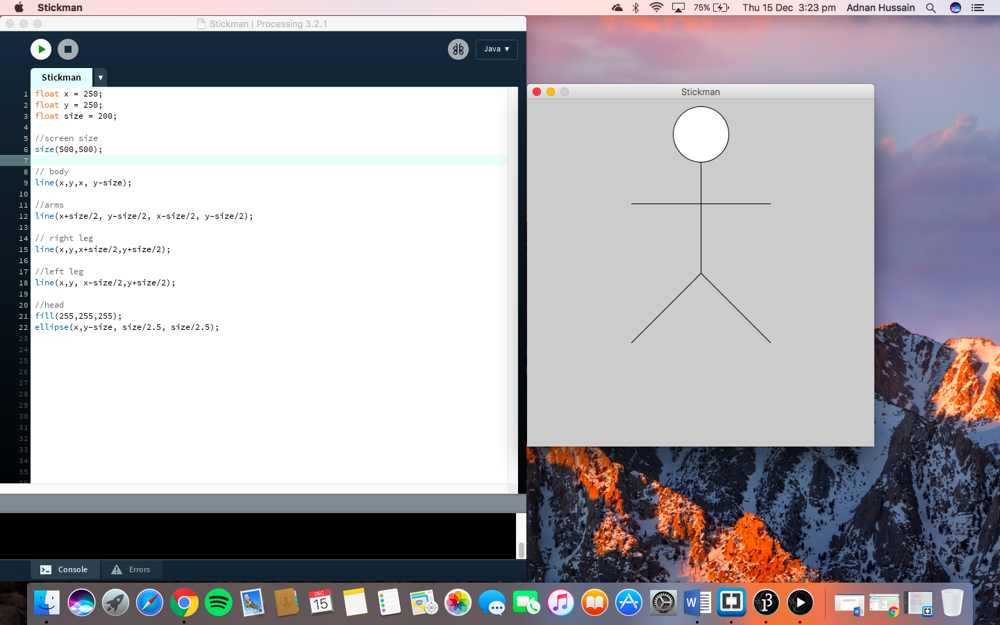

MOHAMMED ADNAN HUSSAIN
MOHAMMED ADNAN HUSSAIN The application I have been using in my programming lab sessions is Processing. This is a software sketchbook for learning how to code and in this case, I’m coding in Java.
The application I have been using in my programming lab sessions is Processing. This is a software sketchbook for learning how to code and in this case, I’m coding in Java.
Each week I have learnt something new and have applied it to the portfolio exercises that were set. For example, the first portfolio task asks me to draw a stickman. It was quite simple and took me a few attempts to get the positioning of each body part correct. As the weeks progressed, my coding skills improved drastically as I was able carry out processes such as while loops and if statements.
I found the first few weeks of programming straight forward and quite easy but one thing I struggled on was if statements. I found it a bit difficult to write the correct syntax for an if statement as it could get confusing depending on what the portfolio brief is.
Below, you can see a screenshot of the stickman portfolio task that I completed in the first week.